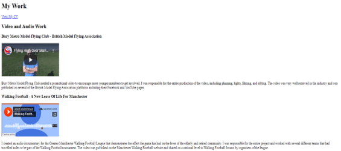
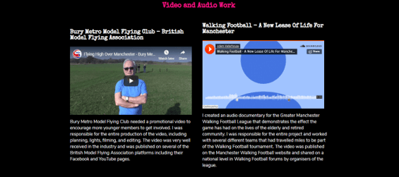
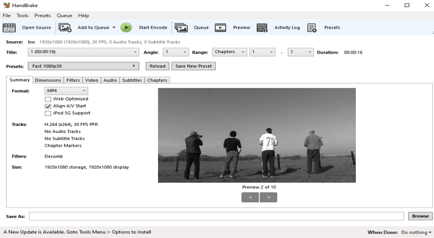

Published: 30/10/2019
Code
Before I even thought about creating a style sheet, I validated every page of HTML in my site to ensure I had no warnings or errors using the (W3C, 2013) Markup validator. In Previous projects such asDiscover Manchester, I chose to validate my HTML at the end of the project, this created issues when I had forgotten to close Div tags. As I had already completed the styling using CSS, this led to some elements on the page behaving unexpectedly once I validated the code I realised that some div tags still needed closing. Therefore, with my portfolio site I chose to take a ‘content first approach’ to design (Borowska, 2018) where I was able to get the bare minimum on the page first and build the design around it.


Accessibility
I want everything I create to work for everybody that wants to use it, therefore I tried to make my code as accessible and usable as possible. This involved ensuring all images and vectors included in my code also had ALT text available, making them readable for screen readers. I have also made much better use of Semantic elements to help structure my site, rather than using unnecessary number of classes. This appropriate use of semantics will also give the site higher priority when it comes to web crawlers indexing my site.
Video
I did have some concerns about the video banner and the time it might take to render every time the user loads the page, especially on slower bandwidths. I came across an article on CSS tricks on using CSS Backgrounds (Coyier, 2015), which gave me some useful tips on how to optimise the video for web, such as making it black and white and removing colour to save space. I also came across an article on compressing large video files (Geng, 2013) using a piece of software called Handbrake. Handbrake allowed me to reduce file sizes from above 100mb, to under 2mb which had a huge effect on the render time of the videos without having a drastic effect on the quality of the video. I also introduced a cover image for my videos, meaning that if a user’s connection is quite poor or their browser can’t play the video, that the user still has a functional header with a picture from the video.

SEO integration
I want my portfolio site to be indexed by the major search engines and have used the Google Search Console and Google Analytics to measure the success of the site and establish where the majority of impressions are landing on the site. In order to keep my website significant I intend to publish regular blogs, at least once a month, this will ensure that my website is seen as relevant and up to date by Search Engines. I want some of the blogs to focus on the projects I’ve worked on or am currently in progress with, this will allow me to create links for users to read more about my projects. Using links effectively was essential for both the SEO and the accessibility of my website. This means all my call to action buttons had useful text and direction, such as ‘View My CV’ rather than ‘Click Here’. I have also made good use of the meta data on every page of my website, which include detailed descriptions of what’s on every page. I have opted not to use the keywords meta tag as search engines no longer use this in rankings (Google, 2009).
References
- Borowska, P. (2018) Creating Better Design with Content First Approach. 9th April. Designmodo. [Online] [Accessed 19th September 2019] https://designmodo.com/better-content-first/
- Coyier, C. (2015) Should I use a video as a background?. 29th December. CSS Tricks. [Online] [Accessed 20 September 2019] https://css-tricks.com/should-i-use-a-video-as-a-background/
- Geng, F. (2013) How to compress large video files without losing quality using Handbrake. 21st October. WebLearn Blog. [Online] [Accessed 9th October 2019]http://blogs.it.ox.ac.uk/adamweblearn/2013/10/
how-to-compress-large-video-files-without-losing-quality-using-handbrake/ - Google. (2009) Google does not use the keywords meta tag in web ranking. 21st September. [Online] [Accessed 1st October 2019] https://webmasters.googleblog.com/2009/09/google-does-not-use-keywords-meta-tag.html
- W3C. (2013) Markup Validation Service. [Online][Accessed 30th September] https://validator.w3.org/